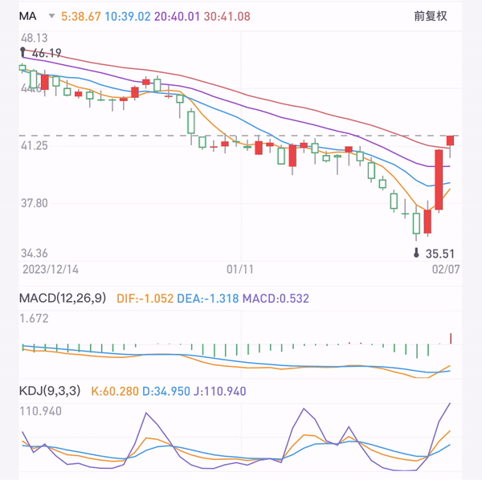
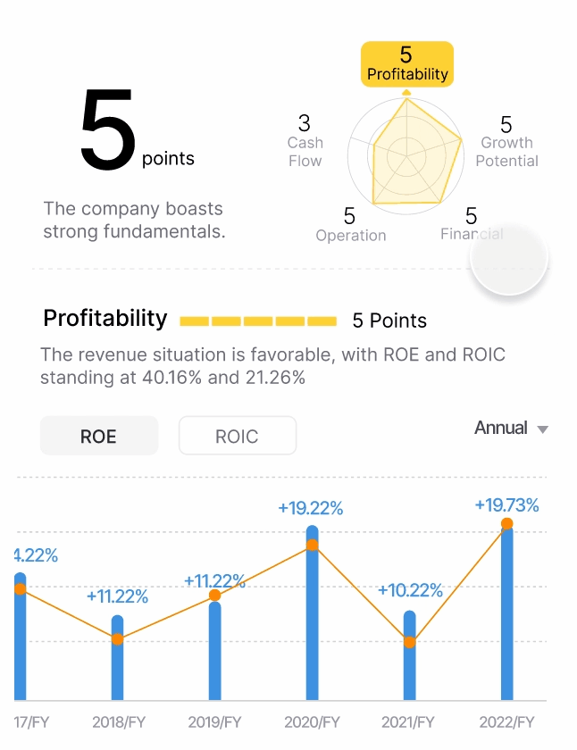
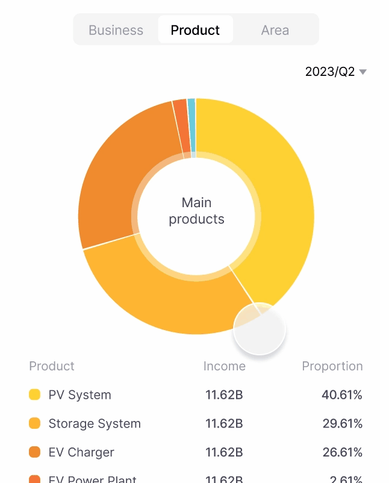

Oct 2023
UX design & User Research
Mobile application
Using a few simple interactive steps, assist users in discovering music that better aligns with their preferences and feelings.
Spotify uses machine learning to serve music and podcasts to its users in various personalized ways with Signals, like: Discover Weekly, Daylist, Algotorial playlists, AI DJ
Signals are ways for platforms to understand what users enjoy, what they want more of, and what they don't want to see.
How might Spotify better serve music discovery behaviors using AI on new or existing surfaces based on both implicit and explicit signals?
Explicit Signals. These are signals that are given directly from the user to the platform. Much of the time, they manifest as UI elements indicating liking or disliking something.
Implicit Signals. These signals that are gathered by a platform either through demographic data or are behaviors and motivations slowly uncovered over time of usage.
I gathered the problems and feelings people usually have with Spotify and grouped them.
Insight:
Spotify makes a recommendation they won't listen to -- they feel: doubt about it
because:
they don't know what it's based on
HMW make recommendations be more reliable?
We had a brainstorm to generate ideas
- Combine the Explicit Signals and Implicit Signals
- User can be aware of the signal, knowing how it comes.
Ask users to pick up 3 choices they like -- This or That!
The user will be asked to
make a choice in a second, then the answers are used as explicit signals in recommend
music.
Do you like Cat or Dog?
Do you want to relax in the City or Nature?
Are you feeling Happy or Sad?
...
How to assist investors to make smart decisions?In our user research, we have identified that novice investors often lack professional financial knowledge, leading to uncertainty about how to analyze a stock. Faced with complex financial charts and data, they frequently experience anxiety and struggle to comprehend the significance of these numbers.
Stock trading apps commonly presents candlestick charts. However, for novice investors and those uninterested in short-term price fluctuations, don't like to read the complex chart. So, I've introduced a simplified line chart that focuses solely on illustrating the trend in stock price movements. And the types of chart can be easily switched.
Our aim is to assist investors in establishing sound investment practices. To achieve this, we have developed a straightforward and user-friendly stock analysis model by knowing:
How is the company?
Is it worth to invest in this price?
What should I be cautious?

The radar chart is used to clearly present the detailed analysis process and data, enabling users to understand the analytical method of the ratings.
Color
Interactions
Sliding&Zooming - show detailed or general
Toggle more information
Tap for more info
Stock investments carry high risks, and emotions can be influenced by price changes. Addressing negative sentiments during market downturns is crucial to supporting users.
After launching the APP, we gained huge succeed among young investors. The concise user interface and simplified data analysis module are the key modules attracting them.
" I like to view the stock ratings in investing."
"
With similar transaction fees, I prefer investing in stocks on this app. "
"
I enjoy a pleasant mood when making investments."